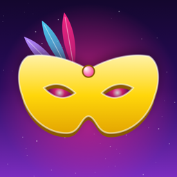

Impostore: La Maschera
Il party game del bugiardo · 3–20 giocatori · un solo iPhone o iPad · anche offline
The liar's party game · 3–20 players · just one iPhone or iPad · works offline
Assistenza
Domande, problemi o idee per nuove parole? Scrivici: ti risponderemo il prima possibile.
impostore.supporto@gmail.comDomande frequenti
Come si gioca?
Passatevi il telefono (o l'iPad): ognuno scopre in segreto la propria carta. Tutti ricevono la stessa parola segreta, tranne l'impostore. A turno ognuno dice una parola collegata, poi votate chi secondo voi è l'impostore. Se lo scoprite, può ancora vincere indovinando la parola!
Ho acquistato lo sblocco, ma le categorie sono bloccate
Apri Info e privacy dalla schermata iniziale e tocca Ripristina acquisti, usando lo stesso Apple Account con cui hai acquistato.
Serve una connessione a internet?
No: il gioco funziona completamente offline. La connessione serve solo per acquistare o ripristinare lo sblocco.
Come creo le mie categorie?
Con lo sblocco completo: tocca Gioca, poi Crea e modifica le tue categorie. Scrivi almeno 5 parole, una per riga.
Cos'è il Complice?
Una modalità extra che attivi nelle opzioni (da 5 giocatori): un giocatore conosce la parola e sa chi è l'impostore, e vince insieme a lui se non viene scoperto.
Come cancello i miei dati?
Tutto resta solo sul tuo dispositivo: eliminando l'app si cancellano nomi, impostazioni, punteggi e categorie create. Non raccogliamo alcun dato.
Privacy
Non raccogliamo nessun dato personale. Leggi l'informativa sulla privacy.
Support
Questions, problems or ideas for new words? Write to us and we'll get back to you as soon as possible. Please note that the game itself is in Italian.
impostore.supporto@gmail.comFrequently asked questions
How do you play?
Pass the phone (or the iPad) around: everyone secretly looks at their own card. Everybody gets the same secret word, except the impostor. Taking turns, each player says one related word, then you all vote on who you think the impostor is. If you catch them, they can still win by guessing the word!
I bought the unlock, but the categories are still locked
Open Info e privacy from the home screen and tap Ripristina acquisti (Restore Purchases), using the same Apple Account you made the purchase with.
Do I need an internet connection?
No: the game works completely offline. You only need a connection to buy or restore the unlock.
How do I create my own categories?
With the full unlock: tap Gioca (Play), then Crea e modifica le tue categorie (Create and edit your categories). Write at least 5 words, one per line.
What is the Accomplice?
An extra mode you can turn on in the options (from 5 players): one player knows the word and who the impostor is, and wins together with them if they aren't caught.
How do I delete my data?
Everything stays on your device only: deleting the app removes names, settings, scores and the categories you created. We don't collect any data.
Privacy
We don't collect any personal data. Read our privacy policy.